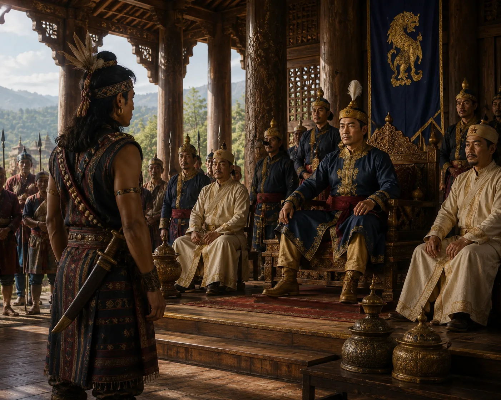

Konseng's Return and Presentation to King Suhungmung
c. 1505 · Swarganarayan’s kingdom

Grown into a stalwart warrior, Konseng is brought from the Naga village to Bakata; Suhungmung acknowledges him as half-brother of royal blood.
Sources have not yet been catalogued for this record.
People: Konseng Barpatragohain, Suhungmung (Swarganarayan)
Open this scene in the interactive archive · Follow this event on MAP